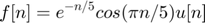
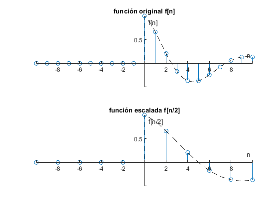
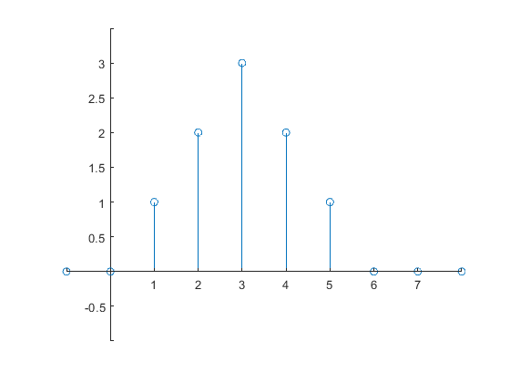
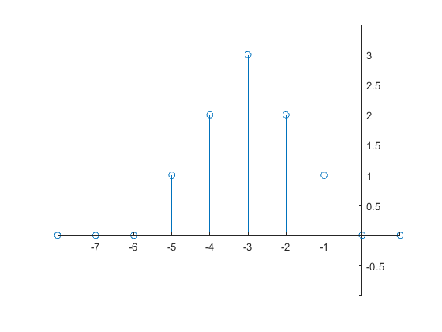
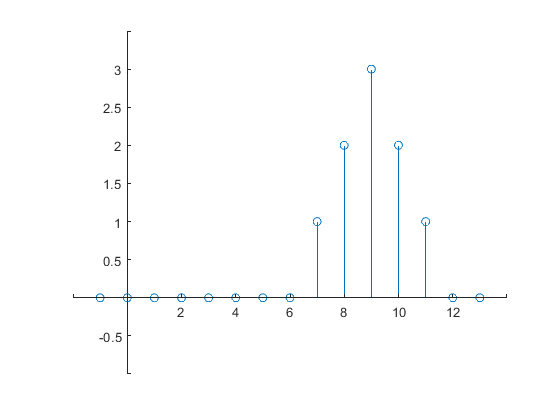
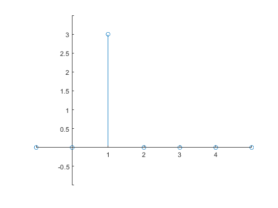
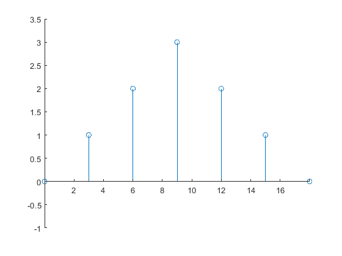
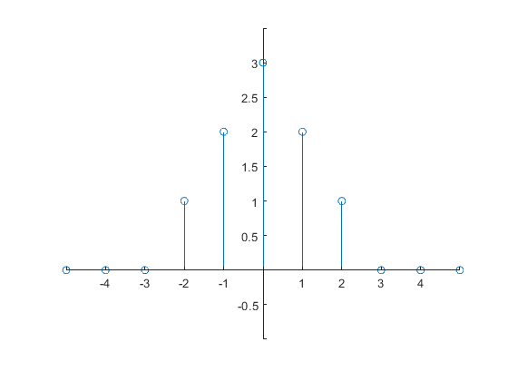
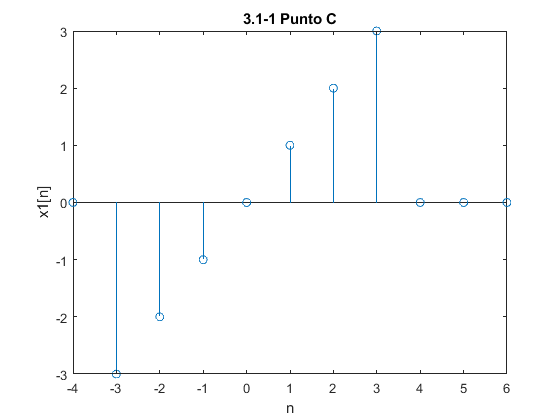

P02 Señales en Tiempo Discreto
INTEGRANTES:
- Aleks Adrián Calderón Vázquez
- Carlos Josafath López Favila
- Fredy Bautista Dominguez
- Irvin Adrián Vázquez Ruíz
- Iván Rodrigo Santacruz Bravo
Contents
- OBJETIVOS
- INTRODUCCIÓN
- DESARROLLO DE LA PRÁCTICA
- 1. Resuelve el problema 3.11-2
- 2. Resuelve el problema 3.2-7, tenga cuidado en los escalamientos horizontales
- 3.Resuelva el problema 3.11-6.
- 4.Con los programas desarrollados en el punto 3, resuelva 3.1-1 c) y 3.1-2 b)
- 5.Construya una app que permita (consultar los ejemplos preconstruidos):
OBJETIVOS
Manipulación básica de MATLAB Gráficas de señales reales y complejas discretas Transformación de señales discretas (escalamientos y traslaciones)
INTRODUCCIÓN
CÓDIGO DE LAS SIGUIENTES GRÁFICAS EN COLAB

DESARROLLO DE LA PRÁCTICA
1. Resuelve el problema 3.11-2
Considere la función en tiempo discreto  La seción 3.11 usa funciones anónimas para describir señales en Tiempo Discreto.
f=@(n) exp(-n/5).*cos(pi*n/5).*(n>=0);
Si bien esta función anónima funciona correctamente para una operación de muestreo reducido como f[2n], no funciona correctamente para una operación de muestreo superior, como f[n/2]. Modifica la función anónima f para que también se adapte correctamente a las operaciones de muestreo superior. Prueba tu codigo, calculando y graficando f(n/2) en (-10<=n<=10)
subplot(2,1,1) n=-10:10; r=-10:0.01:10; stem(n,f(n)) hold on plot(r,f(r),'--k') xlabel('n') ylabel('f[n]') title('función original f[n]') plano = gca; plano.XAxisLocation = "origin"; plano.YAxisLocation = "origin"; plano.Box='off'; subplot(2,1,2) n=-10:2:10; stem(n,f(n/2)) hold on plot(r,f(r/2),'--k') xlabel('n') ylabel('f[n/2]') title('función escalada f[n/2]') plano = gca; plano.XAxisLocation = "origin"; plano.YAxisLocation = "origin"; plano.Box='off'; hold off
2. Resuelve el problema 3.2-7, tenga cuidado en los escalamientos horizontales
u = @(n) 1.0.*(n>=0)+0.0.*(n<0); x = @(n) n.*(u(n)-u(n-3))+(-n+6).*(u(n-3)-u(n-6)); n = -1:8; figure stem(n,x(n)) plano = gca; plano.XAxisLocation = "origin"; plano.YAxisLocation = "origin"; plano.Box='off'; ylim([-1,3.5]);
(a) x[-n]
n = -8:1; stem(n,x(-n)) plano = gca; plano.XAxisLocation = "origin"; plano.YAxisLocation = "origin"; plano.Box='off'; ylim([-1,3.5]);
(b) x[n+6]
n = -8:1; stem(n,x(n+6)) plano = gca; plano.XAxisLocation = "origin"; plano.YAxisLocation = "origin"; plano.Box='off'; ylim([-1,3.5]);
(c) x[n-6]
n = -1:13; stem(n,x(n-6)) plano = gca; plano.XAxisLocation = "origin"; plano.YAxisLocation = "origin"; plano.Box='off'; ylim([-1,3.5]);
(d) x[3n]
n = -1:5; stem(n,x(3*n)) plano = gca; plano.XAxisLocation = "origin"; plano.YAxisLocation = "origin"; plano.Box='off'; xlim([-1,5]) ylim([-1,3.5]);
(f) x[n/3]
n = 0:3:20; stem(n,x(n/3)) plano = gca; plano.XAxisLocation = "origin"; plano.YAxisLocation = "origin"; plano.Box='off'; ylim([-1,3.5]);
(e) x[3-n]
n = -5:5; stem(n,x(3-n)) plano = gca; plano.XAxisLocation = "origin"; plano.YAxisLocation = "origin"; plano.Box='off'; ylim([-1,3.5]);
3.Resuelva el problema 3.11-6.
Suponga que existe un vector x en el espacio de trabajo de MATLAB, correspondiente a una señal DT de duración finita x [n]
(a) Escriba una función MATLAB que, cuando se le pasa el vector x, calcule y devuelva Ex, la energía de x [n].
(b) Escriba una función MATLAB que, cuando se pasa el vector x, calcule y devuelva Px, la potencia de x [n]. Suponga que x [n] es periódico y que el vector x contiene datos para un número entero de períodos de x [n].
INCISO A

INCISO B

4.Con los programas desarrollados en el punto 3, resuelva 3.1-1 c) y 3.1-2 b)
3.1-1 Calcula la energia de la señal x1[n]
N = -4:6; x1=[0 -3 -2 -1 0 1 2 3 0 0 0]; stem(N,x1) title('3.1-1 Punto C') xlabel('n'); ylabel('x1[n]');
Ex1=EnergiaD(x1)
Undefined function 'EnergiaD' for input arguments of type 'double'. Error in ASySPracP02IrvinAdrianVazquezRuiz (line 178) Ex1=EnergiaD(x1)
3.1-2 Calcula la potencia de la señal x2[n]
clear N = -3:8; x2=[-3 -2 -1 0 1 2 3 0 0 0 0 0]; stem(N,x2) title('3.1-2 Punto B') xlabel('n'); ylabel('x2[n]');
Px2=PotenciaSDP(x2)
5.Construya una app que permita (consultar los ejemplos preconstruidos):
- Gráficar señales en tiempo discreto reales, el usuario ingresa la definición de la señal en el formato especifico
- El usuario puede definir el intervalo de la gráfica
- El usuario puede seleccionar el tipo de transformación (horizontal, vertical o combinación) que desee realizar a la señal, la app deberá mostrar la gráfica de esta transformación.
- Se adjunta una imagen de la app a la práctica, y el archivo de la app.
Se Utilizò la interfaz de AppDesigner que proporciona MATLAB para generar la aplicaciòn solicitada
NOTA En la asignacion se subio un archivo .zip que contiene tanto el archivo .mlapp como las imagenes que usa para su funcionamiento